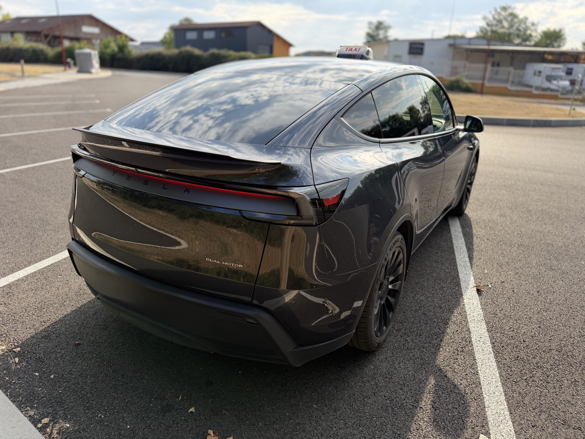
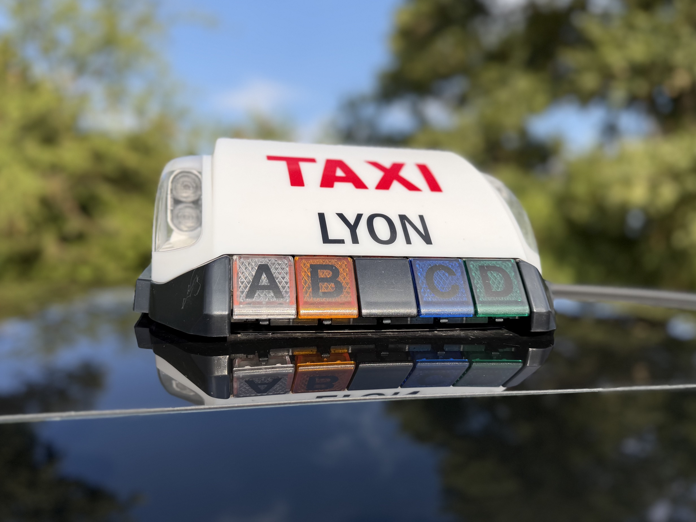

TAXI GRAY vous accompagne pour tous vos déplacements : gares, aéroports, rendez-vous médicaux, déplacements professionnels et trajets toutes distances.
📞 06 12 88 16 34Transport vers les gares d’Ambérieu et les correspondances régionales.
Transferts vers Lyon-Saint-Exupéry, Genève et autres destinations.
Accompagnement pour vos rendez-vous médicaux selon vos besoins.
Déplacements d'affaires et trajets longue distance.
TAXI GRAY intervient notamment à :
Un véhicule confortable et adapté à vos déplacements dans l’Ain.

